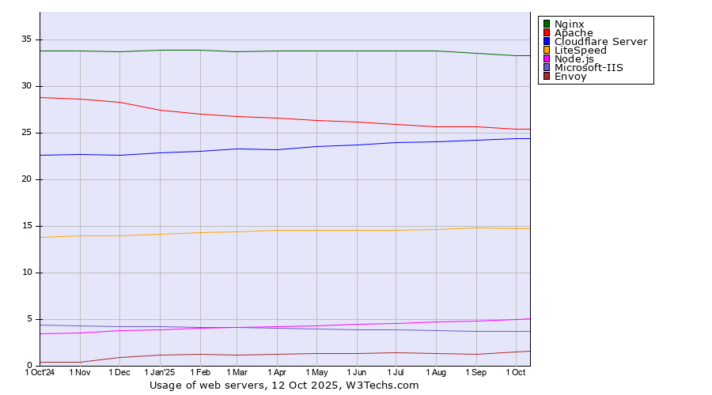
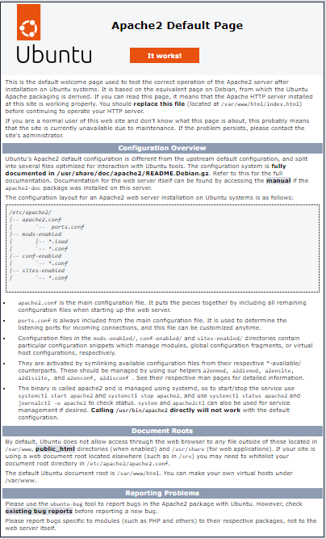
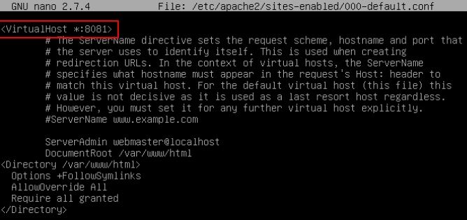
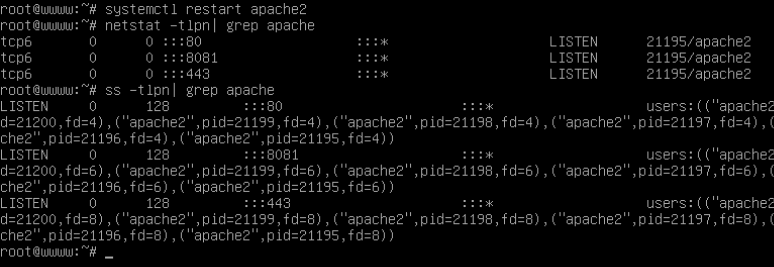
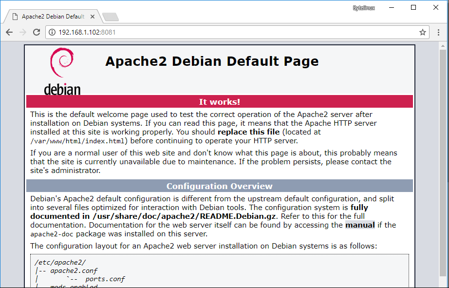
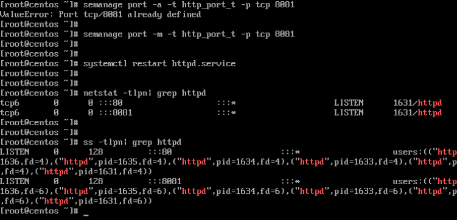
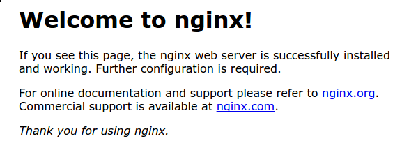

🔺Entorns de desplegament¶
1️⃣ Servidors web¶
Apache vs Nginx
Per tal de desplegar aplicacions web necessitarem almenys un Servidor Web (per a l’allotjament de pàgines web estàtiques).
El servidor web utilitza un sistema operatiu com a base per al seu funcionament. El sistema operatiu que en més del 95% de les ocasions serà un sistema Linux.
Si, se va a servir pàgines dinàmiques, caldrà un programari per a la gestió de les bases de dades (MySQL habitualment), i un llenguatge de programació per gestionar el contingut dinàmic (sol ser PHP).
Existeixen gran quantitat de servidors web diferents, des d’Apache i Nginx, els més coneguts i utilitzats amb més d’un 85% d’ús entre tots dos, fins a altres servidors menys coneguts com Microsoft IIS (si fem servir un servidor Windows), LiteSpeed, Node.js, etc.
Els dos servidors més utilitzats per muntar pàgines web avui dia són Apache i Nginx, però, és impossible dir que un és millor que un altre ja que cadascun té les seves pròpies fortaleses i debilitats i pot millorar millor sota certes circumstàncies o simplement ser més senzill d’utilitzar.
Gràfica comparativa de servidors web

{kind=link}
Característiques de Nginx:
- És lleuger
- És multiplataforma i fàcil d’instal·lar
- Es pot utilitzar amb Apache!
- Memòria catxé
- Balancejador de càrrega
- Suport comunitari i professional
- Compatibilitat amb les aplicacions web més populars
Nginx és compatible amb una gran quantitat de CMS existents al mercat, i hi ha un molts tutorials i documentació per instal·lar aquests sota Nginx, com per exemple: Wordpress, Joomla, Drupal, phpBB …
2️⃣ LAMP¶
LAMP és l’acrònim usat per descriure un sistema d’infraestructura d’Internet que utilitza les eines següents:
- Linux (Sistema Operatiu)
- Apache (Servidor Web)
- MySQL/MariaDB (Sistema Gestor de Bases de Dades)
- PHP (llenguatge de programació)
{kind=link}
3️⃣ LEMP¶
LEMP és l’acrònim usat per descriure un sistema d’infraestructura d’Internet que utilitza les eines següents:
- Linux (Sistema Operatiu)
- E Nginx (Servidor Web)
- MySQL/MariaDB (Sistema Gestor de Bases de Dades)
- PHP (llenguatge de programació)
{kind=link}
4️⃣ LINUX¶
Ubuntu - APT - Guies Ubuntu Server - Ubuntu al Cloud
Debian - Documentació de Debian - Guia d’instal·lació PC amd64
Linux Mint - Guia d’instal·lació - Guia d’usuari
Red Hat - Documentació de Red Hat - Instal·lació de RHEL
5️⃣ Apache¶
Apache és un servidor web de codi obert i multiplataforma que permet desplegar aplicacions web en un servidor. En aquest document es descriu com instal·lar Apache a Ubuntu.
El servidor HTTP Apache és un dels servidor web més utilitzat al món. Proporciona moltes característiques poderoses, incloent mòduls carregables dinàmicament, suport robust de mitjans i una àmplia integració amb altres programaris populars.
Requisits
- Servidor Linux (Ubuntu Server 22.04 o +)
- Accés a terminal amb permisos de superusuari
Instal·lació en Ubuntu¶
Necessitareu un servidor Ubuntu configurat amb un usuari no root amb privilegis de sudo i un firewall habilitat per bloquejar ports no essencials.
Passes a seguir:
Pas 1 — Instal·lació d’Apache
Apache està disponible dins dels repositoris de programari predeterminats d’Ubuntu, cosa que fa possible instal·lar-lo usant eines convencionals de gestió de paquets.
Comença actualitzant l’índex de paquets locals per reflectir els darrers canvis upstream:
sudo apt update
Després, instal·la el paquet apache2:
sudo apt install apache2
Després de confirmar la instal·lació, apt instal·larà Apache i totes les dependències requerides.
Pas 2 — Ajust del Firewall
Abans de provar Apache, cal modificar la configuració del tallafoc per permetre l’accés extern als ports web predeterminats. Tindreu un firewall UFW configurat (si ja ho heu fet) per restringir l’accés al vostre servidor.
Durant la instal·lació, Apache es registra amb UFW per proporcionar alguns perfils d’aplicació que es poden utilitzar per habilitar o desactivar l’accés a Apache a través del tallafoc.
Llista els perfils d’aplicació de ufw executant el següent:
sudo ufw app list
L’eixida serà una llista dels perfils d’aplicació:
Available applications:
Apatxe
Apatxe Full
Apache Secure
OpenSSH
Com indica l’eixida, hi ha tres perfils disponibles per a Apache:
- Apache: Aquest perfil obre només el port 80 (tràfic web normal i no xifrat)
- Apache Full: Aquest perfil obre tant el port 80 (tràfic web normal i no xifrat) com el port 443 (tràfic xifrat TLS/SSL)
- Apache Secure: Aquest perfil només obre el port 443 (tràfic xifrat TLS/SSL)
Es recomana habilitar el perfil més restrictiu que encara permeta el trànsit que heu configurat. Com que encara no heu configurat SSL per al vostre servidor en aquesta guia, només haureu de permetre el trànsit al port 80:
sudo ufw allow 'Apache'
Durant la instal·lació, Apache es registra amb UFW per proporcionar alguns perfils d’aplicació que es poden utilitzar per habilitar o desactivar l’accés a Apache a través del tallafoc.
Podeu verificar el canvi comprovant l’estat:
sudo ufw status
L’eixida proporcionarà una llista del trànsit HTTP permès:
Status: active
To Action From
-- ------ ----
OpenSSH ALLOW Anywhere
Apatxe ALLOW Anywhere
OpenSSH (v6) ALLOW Anywhere (v6)
Apatxe (v6) ALLOW Anywhere (v6)
Com indica l’eixida, el perfil s’ha activat per permetre l’accés al servidor web Apache.
Pas 3 — Comprovació del teu servidor web
Al final del procés d’instal·lació, Ubuntu inicia Apache. El servidor web ja estarà en funcionament.
Assegureu-vos que el servei estiga actiu executant l’ordre per al sistema init systemd:
sudo systemctl status apache2
Eixida:
● apache2.service - The Apache HTTP Server
Loaded: loaded (/lib/systemd/system/apache2.service; enabled; vendor prese>
Active: active (running) since Tue 2022-04-26 15:33:21 UTC; 43s ago
Docs: https://httpd.apache.org/docs/2.4/
Main PID: 5089 (apache2)
Tasks: 55 (límit: 1119)
Memory: 4.8M
CPU: 33ms
CGroup: /system.slice/apache2.service
├─5089 /usr/sbin/apache2 -k start
├─5091 /usr/sbin/apache2 -k start
└─5092 /usr/sbin/apache2 -k start
L’eixida indica que el servei s’ha iniciat correctament. No obstant això, la millor manera de provar-ho és sol·licitar una pàgina web.
Podeu accedir a la pàgina d’inici per defecte d’Apache per confirmar que el programari funciona correctament a través de la vostra adreça IP. Si no coneixeu l’adreça IP del vostre servidor, podeu obtenir-la de diverses maneres des de la línia de comandaments.
Intenteu escriure el següent a l’indicador d’ordres del vostre servidor:
hostname -I
Rebràs algunes adreces separades per espais. Pots provar cadascuna al teu navegador web per determinar si funcionen.
Una altra opció és fer servir l’eina gratuïta icanhazip.com. Aquest és un lloc web que, quan s’hi accedeix, retorna l’adreça IP pública de la teva màquina segons es llegeix des d’una altra ubicació a Internet:
curl -4 icanhazip.com
Quan tingueu l’adreça IP del vostre servidor, introduïu-la a la barra d’adreces del vostre navegador:
http://your_server_ip
Voreu la pàgina predeterminada d’Apache a Ubuntu com a la imatge següent:

{kind=link}
La pàgina inclou informació bàsica sobre arxius i ubicacions de directoris importants d’Apache.
Pas 4 - Gestió del Procés d’Apache
Algunes ordres bàsiques per a la gestió d’Apache usant systemctl.
-
Parar el servidor web:
sudo systemctl stop apache2 -
Iniciar el servidor web quan està parat:
sudo systemctl start apache2 -
Aturar i després iniciar el servei novament:
sudo systemctl restart apache2 -
Si simplement estàs fent canvis de configuració, Apache sovint pot recarregar sense perdre connexions. Per fer això, utilitza la següent ordre:
sudo systemctl reload apache2 -
Per defecte, l’Apache està configurat per iniciar-se automàticament quan el servidor arranca. Si això no és el que desitges, desactiva aquest comportament executant:
sudo systemctl disable apache2 -
Per tornar a habilitar el servei perquè s’inicie en arrancar:
Apache ara s’iniciarà automàticament quan el servidor torne a arrancar.sudo systemctl enable apache2
Modificar el port per defecte¶
Per indicar al servidor web Apache a enllaçar-se i escoltar el trànsit web en ports diferents dels ports web estàndard, s’ha d’afegir una nova declaració que continga el nou port per a futurs enllaços.
En sistemes basats en Debian/Ubuntu, el fitxer de configuració que cal modificar és /etc/apache2/ports.conf. En distribucions basades en RHEL/CentOS, editeu el fitxer /etc/httpd/conf/httpd.conf.
Obrir el fitxer específic de la distribució instal·lada amb un editor de text de consola i afegir la nova declaració de port com es mostra a continuació:
# nano /etc/apache2/ports.conf [A Debian/Ubuntu]
# nano /etc/httpd/conf/httpd.conf [A RHEL/CentOS]
Si només se canvia el port o s’afegeixen més ports ací, probablement també s’haurà de canviar la declaració de VirtualHost a /etc/apache2/sites-enabled/000-default.conf.
Listen 80
Listen 8081
<IfModule ssl_module>
Listen 443
</IfModule>
<IfModule mod_gnutls.c>
Listen 443
</IfModule>
En aquest exemple, configurariem el servidor HTTP Apache per escoltar connexions al port 8081. Assegureu-vos d’afegir la declaració a continuació en aquest fitxer, després de la directiva que instrueix el servidor web a escoltar al port 80, com s’il·lustra a continuació:
Listen 8081
Canviar el port d’Apache a Debian i Ubuntu
Després d’haver afegit la línia anterior, s’ha de crear o alterar un host virtual d’Apache en distribucions basades en Debian/Ubuntu per iniciar el procés d’enllaç, específic als vostres propis requisits de vhost.
Canviar el port d’Apache a CentOS i RHEL
En distribucions CentOS/RHEL, el canvi s’aplica directament al sistema virtual per defecte. A l’exemple de continuació, modificarem el host virtual predeterminat del servidor web i l’indicarem a Apache que escolte el trànsit web des del port 80 al port 8081.
Caldrà obrir i editar el fitxer 000-default.conf i canviar el port a 8081 tal com es mostra a continuació:
# nano /etc/apache2/sites-enabled/000-default.conf

{kind=link}
Canviar el port d’Apache en Virtualhost
Finalment, per aplicar els canvis i fer que Apache s’enllaçe al nou port, reiniciem el dimoni i verifiquem la taula de sockets de xarxa local usant l’ordre netstat o ss.
El port 8081 en escolta s’hauria de mostrar a la taula de xarxa del servidor.
# systemctl restart apache2
# netstat -tlpn | grep apache
# ss -tlpn | grep apache

{kind=link}
Verificar el port d’Apache
La comprobació també pot consistir en obrir un navegador i navegar a l’adreça IP del vostre servidor o nom de domini al port 8081. La pàgina predeterminada d’Apache s’hauria de mostrar al navegador.
No obstant això, si no podeu navegar a la pàgina web, torneu a la consola del servidor i assegureu-vos que les regles de tallafocs adequades estiguen configurades per permetre el trànsit del port.
http://server.ip:8081

{kind=link}
Pàgina per defecte d’Apache a Debian i Ubuntu
En distribucions Linux basades en CentOS/RHEL, instal·leu el paquet policycoreutils per afegir les regles SELinux requerides perquè Apache s’enllaçe al nou port i reinicieu el servidor HTTP Apache per aplicar els canvis.
# yum install policycoreutils
Afegiu regles SELinux per al port 8081:
# semanage port -a -t http_port_t -p tcp 8081
# semanage port -m -t http_port_t -p tcp 8081
Reinicieu el servidor web Apache:
# systemctl restart httpd.service
Executeu l’ordre netstat o ss per verificar si el nou port s’enllaça i escolta el trànsit entrant amb èxit:
# netstat -tlpn | grep httpd
# ss -tlpn | grep httpd

{kind=link}
Verificar el port d’Apache a CentOS i RHEL
Obre un navegador i navegua a l’adreça IP del vostre servidor o nom de domini al port 8081 per verificar si el nou port web és accessible a la vostra xarxa. La pàgina predeterminada d’Apache s’hauria de mostrar al navegador:
http://server.ip:8081
Si no pots navegar a l’adreça anterior, assegura’t d’afegir les regles de tallafocs adequades a la taula de tallafocs del servidor.
Canviar l’arrel web¶
Configurar Hosts Virtuals¶
Utilitzar mòduls¶
6️⃣ Nginx¶
Nginx és un servidor web de codi obert i multiplataforma que permet desplegar aplicacions web en un servidor. En aquest document es descriu com instal·lar Nginx en Ubuntu.
El servidor HTTP Nginx és el servidor web més utilitzat al món.
Requisits
- Servidor Linux (Ubuntu Server 22.04 o +)
- Accés a terminal amb permisos de superusuari
Instal·lació
Per instal·lar Nginx, utilitzem la següent ordre:
sudo apt install nginx
Al finalitzar la instal·lació, caldrà verificar que Nginx s’està executant correctament:
sudo systemctl status nginx
Eixida:
● nginx.service – A high performance web server and reverse proxy server
Loaded: loaded (/lib/systemd/system/nginx.service; enabled; vendor preset: enabled)
Active: active (running) since …
Estructura d’arxius
| Ruta | Descripció |
|---|---|
/etc/nginx/nginx.conf |
Configuració principal |
/etc/nginx/sites-available/ |
Configs disponibles (una per lloc) |
/etc/nginx/sites-enabled/ |
Configs actives (symlinks) |
/var/www/html/ |
Arrel web per defecte |
/var/log/nginx/access.log |
Logs d’accés |
/var/log/nginx/error.log |
Logs d’errors |
Configuració del Firewall
Per assegurar-nos que el nostre servidor web siga accessible, caldrà permetre el trànsit HTTP (com a mínim) i HTTPS en el tallafoc:
sudo ufw allow 'Nginx Full'
sudo ufw enable
sudo ufw status
Provar Nginx
Amb Nginx instal·lat i el tallafoc configurat, és hora de provar que el nostre servidor està funcionant.
Obrim el nostre navegador i visitem l’adreça IP del nostre servidor: http://la-teua-adreça-ip
Si tot està configurat correctament, hauríem de veure la pàgina de benvinguda predeterminada de Nginx que diu “Welcome to nginx!”.

{kind=link}
Configuració d’un Server Block
Els Server Blocks són com els Virtual Hosts a Apache. Configurarem un Server Block per a un domini específic.
Primer, creem un nou fitxer de configuració per al nostre domini:
sudo nano /etc/nginx/sites-available/el teu-domini.com
Agreguem la següent configuració bàsica a l’arxiu:
server {
listen 80;
server_name el-teu-domini.com www.el-teu-domini.com;
root /var/www/el-teu-domini.com/html;
index index.html index.htm;
location / {
try_files $uri $uri/ =404;
}
}
Després de guardar l’arxiu, creem el directori per al lloc web:
sudo mkdir -p /var/www/el-teu-domini.com/html
On guardarem l’arxiu index.html
Caldrà establir els permisos correctes:
sudo chown -R $USER:$USER /var/www/el-teu-domini.com/html
sudo chmod -R 755 /var/www/el teu-domini.com
Habilitar el canvi de la Configuració
Per habilitar el nou lloc, crearem un enllaç simbòlic al directori sites-enabled:
sudo ln -s /etc/nginx/sites-available/el-teu-domini.com /etc/nginx/sites-enabled/
Comrovem la configuració de Nginx per assegurar-nos que no hi ha errors de sintaxi:
sudo nginx -t
Reiniciar Nginx
Si tot està bé, reiniciem Nginx per aplicar els canvis:
sudo systemctl restart nginx
Provar el nou lloc
Assegurar-se que la màquina: - té assignat el nom del domini per al que hem creat el nou lloc web. - crida al port configurat
Ara, obrim el navegador i visitem el nou domini: http://el-teu-domini.com i indicarem el port si no és el de per defecte http://el-teu-domini.com:port
7️⃣ Mysql¶
MySQL és un servidor de base de dades SQL ràpid, multifil, multiusuari i robust. Està destinat a sistemes de producció de càrrega pesada i crítics per a la missió, així com a programari desplegat en massa.
Instal·lació en Ubuntu¶
Per instal·lar MySQL, executa la següent ordre des d’un terminal:
sudo apt install mysql-server
Al finalitzar la instal·lació, el servidor MySQL hauria d’iniciar-se automàticament. Podeu verificar ràpidament el vostre estat actual mitjançant systemd:
sudo service mysql status
Hauria de proporcionar una eixida similar a la següent:
● mysql.service - MySQL Community Server
Loaded: loaded (/lib/systemd/system/mysql.service; enabled; vendor preset: enabled)
Active: active (running) since Tue 2019-10-08 14:37:38 PDT; 2 weeks 5 days ago
Main PID: 2028 (mysqld)
Tasks: 28 (límit: 4915)
CGroup: /system.slice/mysql.service
└─2028 /usr/sbin/mysqld --daemonize --pid-file=/run/mysqld/mysqld.pid
Oct 08 14:37:36 db.example.org systemd[1]: Starting MySQL Community Server...
Oct 08 14:37:38 db.example.org systemd[1]: Started MySQL Community Server.
L’estat de la xarxa del servei MySQL també el pots verificar amb l’ordre ss des del terminal:
sudo ss -tap | grep mysql
Com a resultat, hauries de veure algo semblant a lo següent:
LLISTEN 0 151 127.0.0.1:mysql 0.0.0.0:* users:(("mysqld",pid=149190,fd=29))
LLISTEN 0 70 *:33060 *:* users:(("mysqld",pid=149190,fd=32))
Si el servidor no funciona correctament, se pot reiniciar:
sudo service mysql restart
Un bon punt de partida per solucionar problemes és revisar el diari de systemd, al qual se pot accedir des del terminal:
suo journalctl -u mysql.service
Configura MySQL¶
Podeu editar els fitxers en /etc/mysql/ per configurar els paràmetres bàsics: fitxer de registre, número de port, etc.
Per exemple, per configurar MySQL per escoltar connexions de hosts de xarxa, al fitxer /etc/mysql/mysql.conf.d/mysqld.cnf, canvia la directiva bind-address a l’adreça IP del servidor:
bind-address = 192.168.0.5
Nota: Caldria reemplaçar 192.168.0.5 amb l’adreça apropiada, que podeu determinar mitjançant l’ordre
ip address show
Al fer canvis de configuració, caldrà reiniciar el dimoni MySQL amb la següent ordre:
sudo systemctl restart mysql.service
8️⃣ PHP¶
PHP és un llenguatge de scripting de propòsit general ideal per al desenvolupament web, ja que els scripts de PHP es poden incrustar en HTML.
Aquesta guia explica com instal·lar i configurar PHP en un sistema Ubuntu amb Apache2 i MySQL. Per tant, abans d’instal·lar PHP, caldrà instal·lar Apache (o altre servidor web) i un servei de base de dades com MySQL.
1 - Instal·lar PHP
PHP està disponible en Ubuntu Linux, però a diferència del llenguatge Python (que ve preinstal·lat en Linux), has d’instal·lar-lo manualment.
Per instal·lar PHP i el mòdul PHP d’Apache, introduïu l’ordre següent en el terminal:
sudo apt install php libapache2-mod-php
2 - Paquets Opcionals
Els paquets següents són opcionals i els podeu instal·lar si els necessiteu per a la vostra configuració:
-
PHP-CLI: Pots executar scripts de PHP a través de la Interfície de Línia de comandaments (CLI). Per fer-ho, primer cal instal·lar el paquet php-cli. Pots instal·lar-lo executant la següent ordre:
bash sudo apt install php-cli -
PHP-CGI: També pots executar scripts de PHP sense instal·lar el mòdul PHP d’Apache. Per aconseguir això, has d’instal·lar el paquet php-cgi:
bash sudo apt install php-cgi -
PHP-MySQL: Per utilitzar MySQL amb PHP, cal instal·lar el paquet php-mysql:
bash sudo apt install php-mysql -
PHP-PgSQL: De manera similar, per a utilitzar PostgreSQL amb PHP, cal instal·lar el paquet php-pgsql:
bash sudo apt install php-pgsql
3 - Configurar PHP
Si s’han instal·lat els paquets libapache2-mod-php o php-cgi, es poden executar scripts de PHP des del navegador web. Per altra banda, si s’ha instal·lat el paquet php-cli, es poden executar scripts de PHP en una terminal.
Per defecte, quan s’instal·la libapache2-mod-php, el servidor web Apache2 es configura per executar scripts de PHP usant aquest mòdul. Primer, verifica si els fitxers /etc/apache2/mods-enabled/php8.*.conf i /etc/apache2/mods-enabled/php8.*.load existeixen. Si no existeixen, podeu habilitar el mòdul usant l’ordre a2enmod.
Quan s’haja instal·lat els paquets relacionats amb PHP i habilitat el mòdul PHP d’Apache, cal reiniciar el servidor web Apache2 per a executar scripts de PHP executant la següent ordre:
sudo systemctl restart apache2.service
4 - Comprovar que la instal·lació s’ha realitzat correctament
Crea un fitxer anomenat info.php al directori /var/www/html
sudo nano /var/www/html/info.php
Afegeix el contingut següent:
<?php
phpinfo();
?>
Ara accediu des d’un navegador a la URL: http://IP/info.php, on IP serà l’adreça IP de la vostra màquina.
Per exemple, si l’adreça IP de la vostra màquina és 192.168.100.2, l’URL serà: http://192.168.100.2/info.php
Si PHP està instal·lat correctament, veureu una pàgina amb informació sobre la versió de PHP, la configuració del servidor i la configuració de PHP.
5 - Més informació